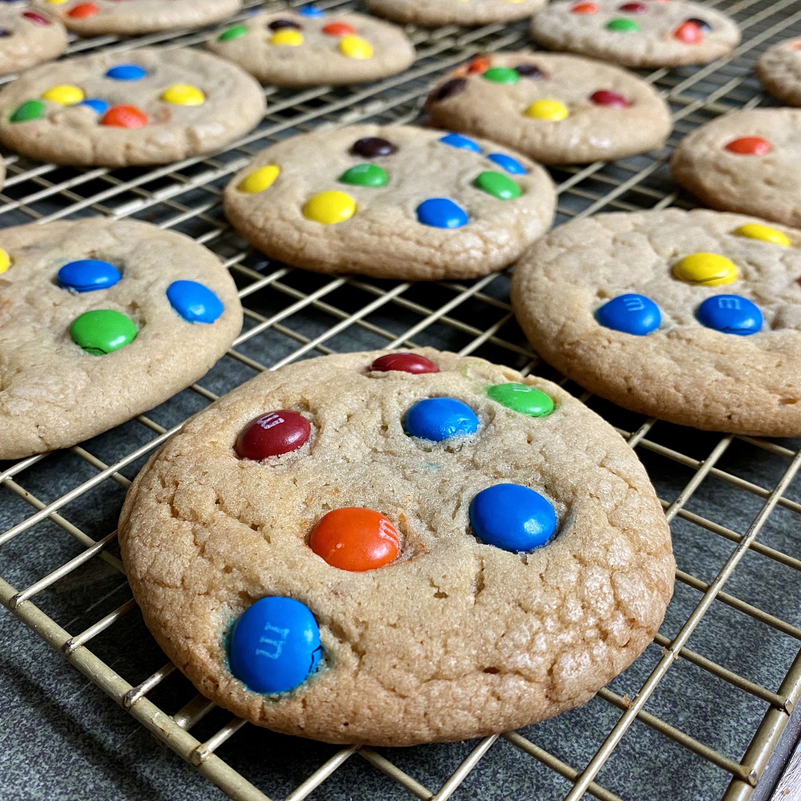

M&M Cookies

Description
This M&M cookie recipe is a favorite of mine! Use any variety of M&M candy
Ingredients
- 1 cup shortening
- 1 cup packed brown sugar
- 1/2 cup white sugar
- 2 eggs
- 1.5 teaspoons vanilla extract
- 2.5 cups all-purpose flour
- 1 teaspoon baking soda
- 1 teaspoon salt
- M&Ms
Steps
- Preheat the oven to 350 degrees F (175 degrees C).
- Beat shortening, brown sugar, white sugar, eggs, and vanilla in a mixing bowl until light and fluffy, 2 to 3 minutes. Add flour, baking soda, and salt; blend well. Stir in 1/2 of the chocolate candies.
- Drop dough by teaspoonfuls onto ungreased baking sheet. Use remaining candies to decorate dough balls; press down slightly.
- Bake in batches in the preheated oven until lightly browned with soft centers, 9 to 11 minutes.
Nutrition Facts
Per Serving: 82 calories; protein 0.8g; carbohydrates 10.8g; fat 3.9g; cholesterol 5.8mg; sodium 55.3mg.